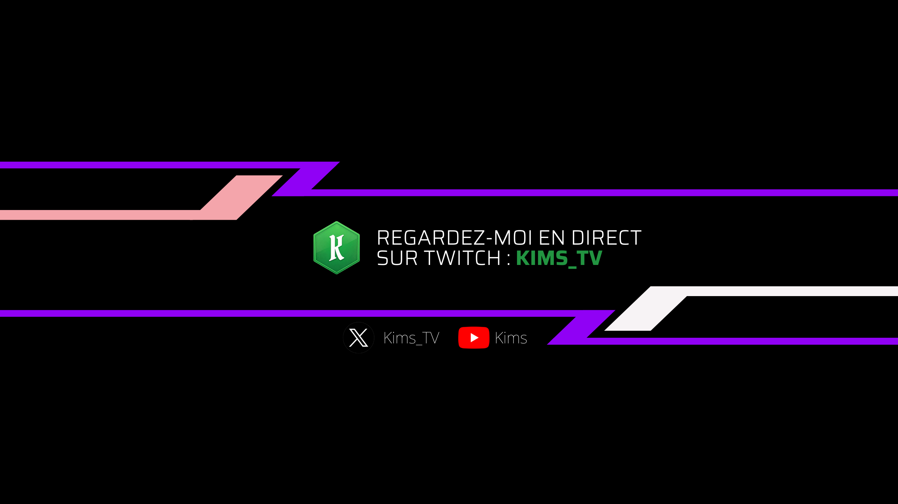

Chaine Twitch

Contexte
Gestion d'une chaîne de live.
Compétences mobilisées
Branding, animation, community management, humour, gaming, partage.
Le projet en détail
Depuis 2025, j'anime ma propre chaîne de live, KIMS_TV, sur Twitch, avec une présence complémentaire sur YouTube. C'est un projet personnel que j'ai monté de A à Z, à la fois pour partager ma passion du jeu vidéo et pour expérimenter, en conditions réelles, les outils et les méthodes de la communication digitale.
Branding. J'ai construit l'identité visuelle de la chaîne : logo, bannière, habillage du stream et visuels pour les réseaux. L'objectif était d'avoir un univers cohérent et reconnaissable, que l'on retrouve aussi bien sur Twitch que sur YouTube et sur X.
Technique et animation. Je gère moi-même l'installation du stream avec OBS (scènes, sources, transitions) et j'utilise StreamElements pour les alertes, les overlays et les interactions avec le chat.
Communauté et ton éditorial. Le live repose sur l'échange avec le chat. Je mise sur l'humour et la bonne humeur pour créer une ambiance conviviale et donner envie de revenir. Cela demande de l'improvisation, de la réactivité, et de savoir modérer et fédérer une communauté.
Ce que ce projet m'apporte. C'est un terrain d'entraînement complet : community management, création graphique, gestion technique du direct et production de contenu régulière. Il me permet aussi de nourrir mes autres projets, comme mes montages de clips gaming.
Envie de voir ça en vrai ? Venez me retrouver en direct sur Twitch.